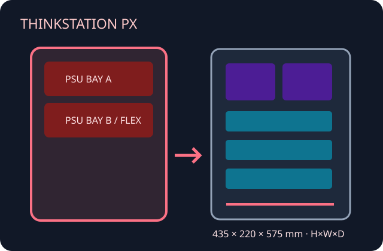

[ DUAL-SOCKET XEON SCALABLE PLATFORM ]
Lenovo ThinkStation PX
Large, highly configurable workstation chassis whose PSU, GPU and storage arrangements vary with processor and machine type.

Specifications & fit
| Model / revision | ThinkStation PX; identify exact machine type, processor count, PSU assembly and option list. |
|---|---|
| Board form factor | Lenovo proprietary dual-socket motherboard; not a standard SSI-EEB/E-ATX conversion case. |
| Dimensions | 435 × 220 × 575 mm (H × W × D), Lenovo published; verify configuration and feet before installation. |
| PSU | OEM power configuration includes up to 1850 W, with redundant/alternate assemblies on supported configurations. Do not substitute generic ATX power supplies. |
| GPU / cooler / radiator fit | Supports multi-GPU configurations documented by Lenovo (up to four professional cards in selected builds); slot spacing, risers and power constrain fit. CPU heatsinks/fans and memory/PCIe ducts are OEM components; no standard radiator envelope is published. |
| Drive bays | Combination of 3.5-inch SATA, M.2 and optional front-accessible M.2 storage, depending on PSU bay and drive configuration. |
| Airflow | Dedicated multi-zone cooling and fan assemblies direct air across CPUs, memory and PCIe GPUs; preserve system air guides and population rules. |
| Serviceability / compatibility | Lenovo service documentation describes replaceable PSU, fan, board and storage modules. Match hot-swap power, risers and bays by machine type; no standard motherboard or PSU fit. |
Manufacturer sources
- Lenovo PSREF — ThinkStation PXConfiguration-specific chassis, storage, power and expansion information.
- Lenovo — ThinkStation PX datasheetManufacturer platform specifications and supported system configurations.
- Lenovo Support — ThinkStation PX Hardware Maintenance ManualOfficial service and replacement procedures.